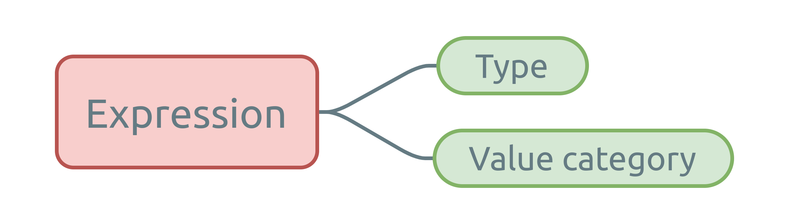
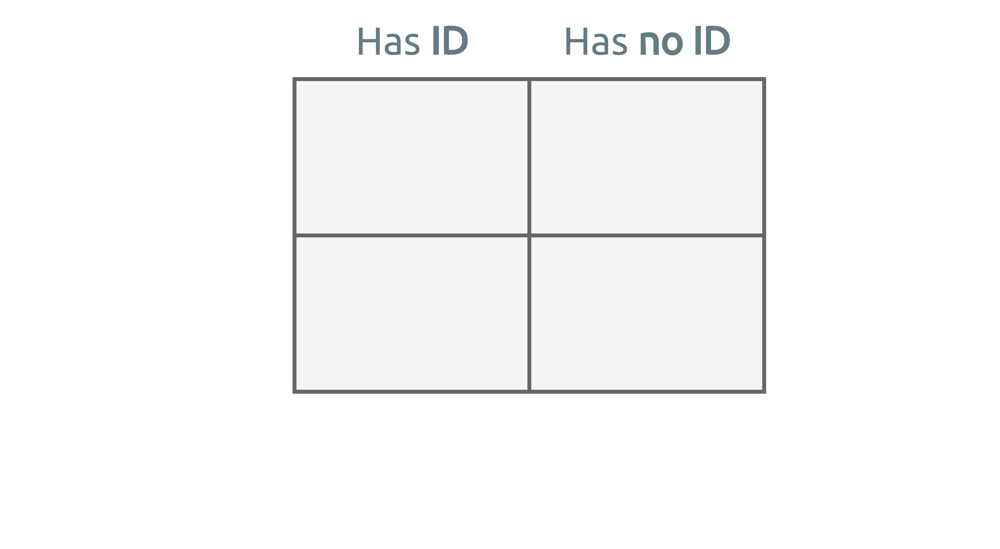
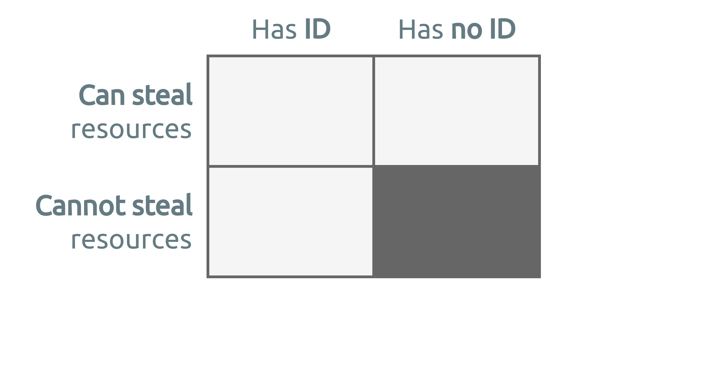
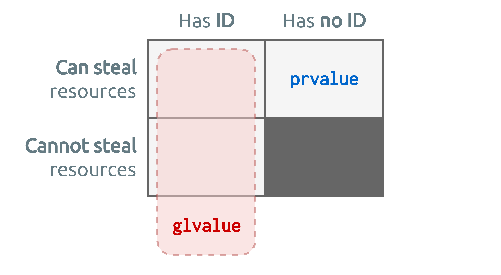
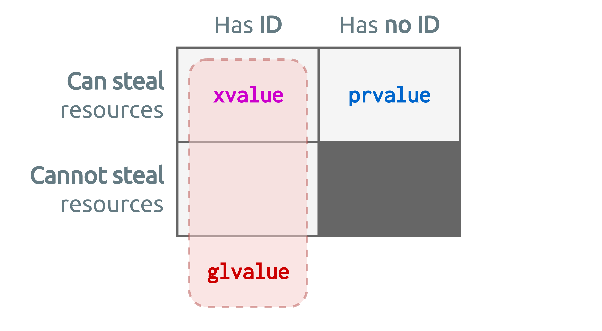
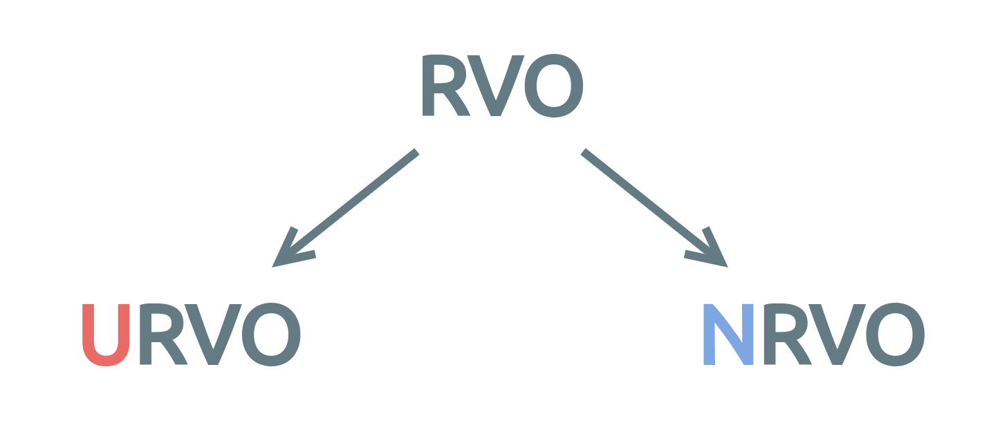
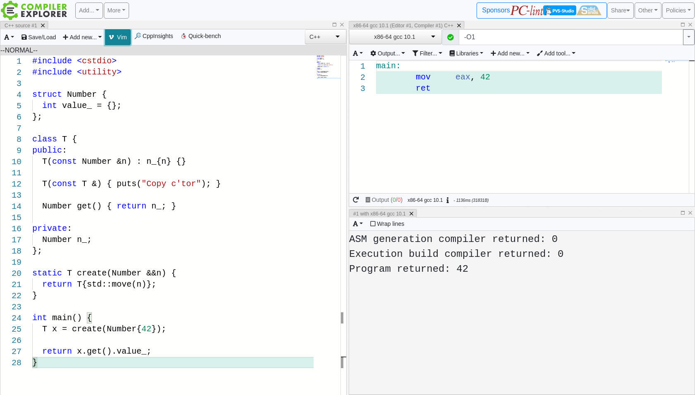
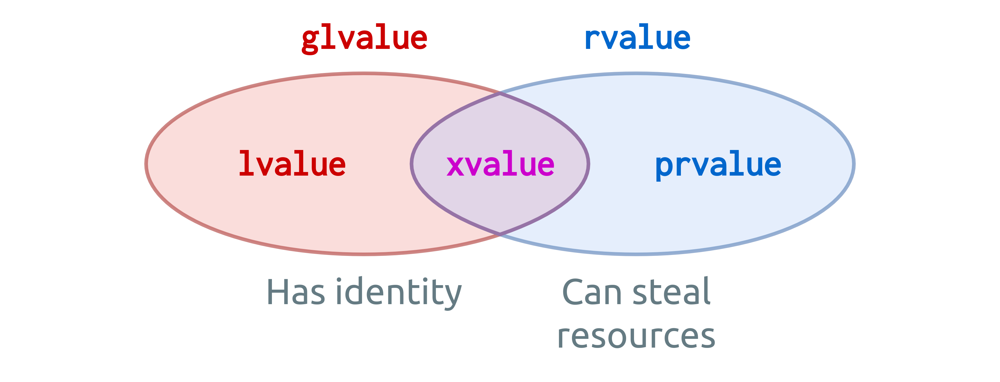
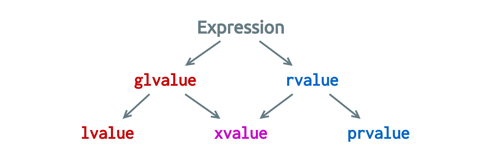
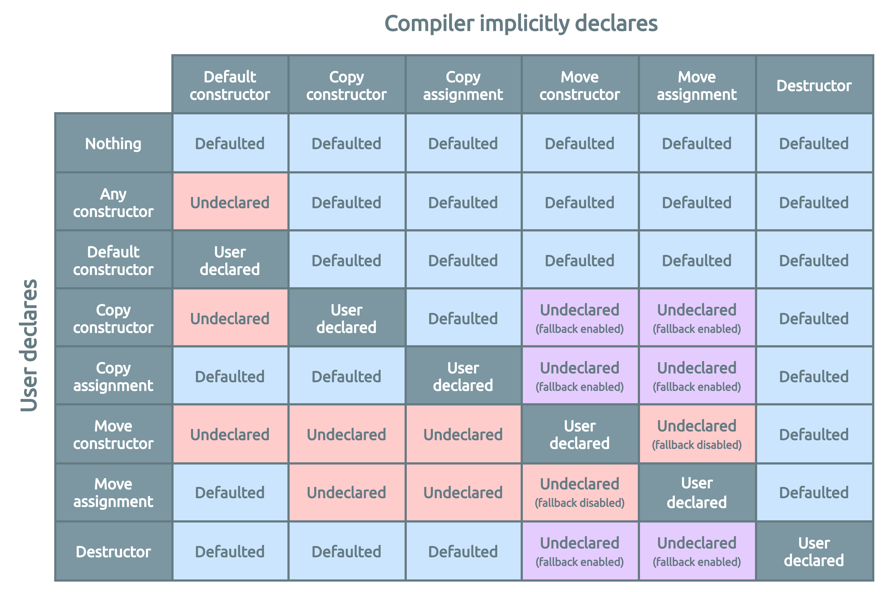

Primary value categories
lvalue – Locator value
prvalue – Pure rvalue
xvalue – eXpiring value
Kris van Rens
(questions)


Value categories are not about objects or class types, they are about expressions!
An expression is a sequence of operators and their operands, that specifies a computation.
Expression evaluation may produce a result, and may generate a side-effect.
In C++, each expression is identified by two properties:

lvalue – Locator value
prvalue – Pure rvalue
xvalue – eXpiring value
glvalue – General lvalue
rvalue – errrRrr..value 
Value categories are organized based on expression properties:
Expression result resources can be stolen if it evaluates to an anonymous temporary, or if the associated object is near the end of its lifetime.
This was the main motivation for move semantics 









Expression x is an lvalue; so overload #1 is called
lvalue and rvalue concepts,Please forget the right-/left-hand notion for today’s definition.


A section in the C++ standard that describes the elision (i.e. omission) of copy/move operations, resulting in zero-copy pass-by-value semantics.
Restrictions apply 
Permits elisions, it does not guarantee!
Actual results depend on compiler and compiler settings.
No copy elision.
Partial copy elision.
Full copy elision.
return statement,throw expression,catch clause.Truth is; compilers have been doing it for years.. 
C++17 added mandates to the standard, informally known as:
A set of special rules for prvalue expressions.
If, in an initialization of an object, when the initializer expression is a
prvalueof the same class type as the variable type.
If, in a
returnstatement the operand is aprvalueof the same class type as the function return type.
Under the rules of C++17, a
prvaluewill be used only as an unmaterialized recipe of an object, until actual materialization is required.
A
prvalueis an expression whose evaluation initializes/materializes an object.
This is called a temporary materialization conversion.
struct Person {
std::string name_;
unsigned int age_ = {};
};
Person createPerson() {
std::string name;
unsigned int age = 0;
// Get data from somewhere in runtime..
return Person{name, age}; // 1. Initial prvalue expression
}
int main() {
return createPerson().age_; // 2. Temporary materialization: xvalue
}An implicit
prvaluetoxvalueconversion.
Remember: prvalues are not moved from!
Occurs when:
prvalue,prvalue,sizeof or typeid to a prvalue,
A variant of copy elision.
Two forms:

These terms live outside the standard.
Refers to the returning of temporary objects from a function.
Guaranteed by C++17 rules.
Refers to the returning of named objects from a function.
The most simple example
Slightly more involved

Not possible to allocate the return value into the return slot
Returning an object of static storage duration
Slicing 
Returning a function argument
RVO does not work when there’s no control over the physical location of the object to be elided.
When even NRVO is not possible..
Implicit rvalue conversion!
Don’t try to be too clever..
operator=,

prvalue to xvalue conversion,prvalues are not moved from,Thank you 

Primary categories: prvalue, xvalue and lvalue.
A glvalue is either an lvalue or an xvalue.
An rvalue is either a prvalue or an xvalue.
glvalueA
glvalueis an expression whose evaluation determines the identity of an object, bit-field, or function.
§basic.lval
prvalueA
prvalueis an expression whose evaluation initializes an object or a bit-field, or computes the value of an operand of an operator, as specified by the context in which it appears.
§basic.lval
xvalueAn
xvalueis aglvaluethat denotes an object or bit-field whose resources can be reused (usually because it is near the end of its lifetime).
§basic.lval
lvalueAn
lvalueis aglvaluethat is not anxvalue.
§basic.lval
rvalueAn
rvalueis aprvalueor anxvalue.
§basic.lval

| Q: | Why is copy/move elision performed for even the lowest optimization levels in most compilers? |
| A: | Because it is the syntax parsing phase early in the compilation that detects when a copy/move can be elided. It does not make sense to generate a copy/move operation for the optimizer to remove it again later. |
Due to temporary materialization in C++17, a type does not require a copy/move constructor when a copy/move is elided.
This code fails to compile before C++17
An exception to the as-if rule; it applies even when there are side-effects to object copying/moving.
Multiple elisions may be chained.
Another way to describe C++17 mechanics for copy elision is “unmaterialized value passing”:
prvalues are returned and used without ever materializing a temporary.
Copy elision is one of the two allowed forms of optimization, …, that can change the observable side-effects (of copy/move constructors and destructors, red.).
Programs relying on the side-effects of copy/move constructors and destructors are not portable.
Temporary materialization does not occur when initializing an object from a
prvalueof the same type! Such an object is directly initialized.
Strictly speaking..
The type is a trivially copyable class type:
int/bool/etc.),class/struct/union with some constraints.We’ll use the following type throughout:
// From: https://medium.com/@barryrevzin/value-categories-in-c-17-f56ae54bccbe
namespace detail {
template <class T> struct value_category {
static constexpr char const * value = "prvalue"; };
template <class T> struct value_category<T&>i {
static constexpr char const * value = "lvalue"; };
template <class T> struct value_category<T&&> {
static constexpr char const * value = "xvalue"; };
}
#define PRINT_VALUE_CAT(expr) \
std::cout << #expr << " is a " \
<< ::detail::value_category<decltype((expr))>::value << '\n'